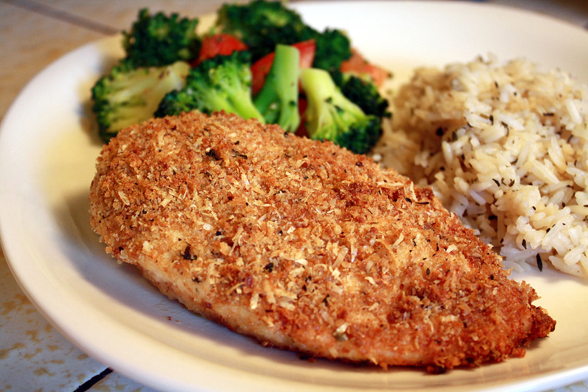

Garlic Chicken

Simple to make, just dip and bake! Garlicky goodness in a breaded chicken dish. Yum!
Ingredients
- ¼ cup olive oil
- 2 cloves garlic, crushed
- ¼ cup Italian-seasoned bread crumbs
- ¼ cup grated Parmesan cheese
- 4 skinless, boneless chicken breast halves
Steps
- Preheat oven to 425 degrees F (220 degrees C).
- Heat olive oil and garlic in a small saucepan over low heat until warmed, 1 to 2 minutes. Transfer garlic and oil to a shallow bowl.
- Combine bread crumbs and Parmesan cheese in a separate shallow bowl.
- Dip chicken breasts in the olive oil-garlic mixture using tongs; transfer to bread crumb mixture and turn to evenly coat. Transfer coated chicken to a shallow baking dish.
- Bake in the preheated oven until no longer pink and juices run clear, 30 to 35 minutes. An instant-read thermometer inserted into the center should read at least 165 degrees F (74 degrees C).
Nutrition facts
Per Serving:
300 calories; protein 30.3g; carbohydrates 5.7g; fat 16.8g; cholesterol 72.8mg; sodium 261.2mg
Return to recipes